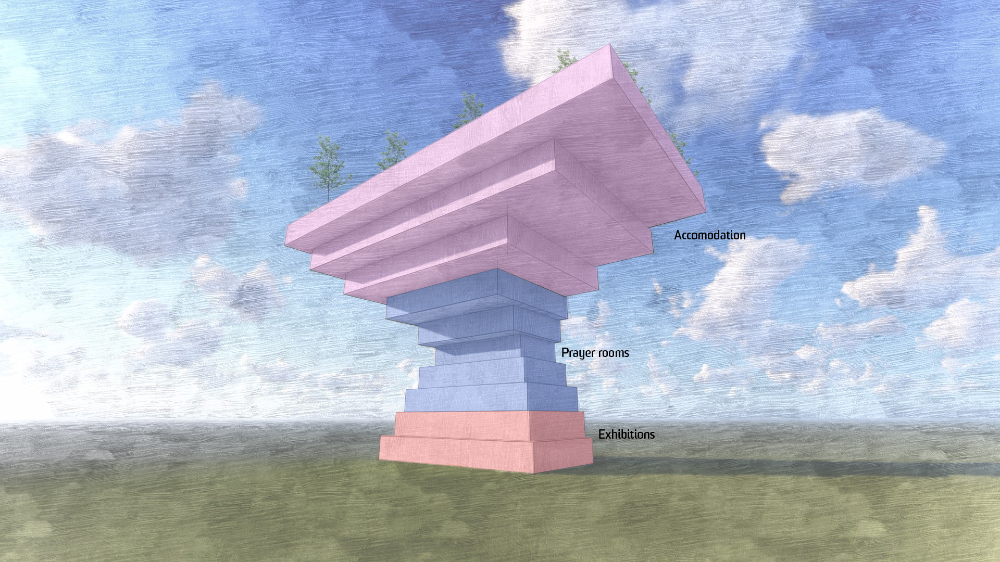

The Religious Center provides a space of worship for those who seek insight about valuable traits of other beliefs and accomodation.
It's a place where worshippers can unite together in serenity, sharing pray rooms, activities and exhibitions about each religion.
Strathfield Station is a hotspot and so is easy to get to. The Center located near Westfields and other facilities offers
many precincts surrounding Burwood Park.
